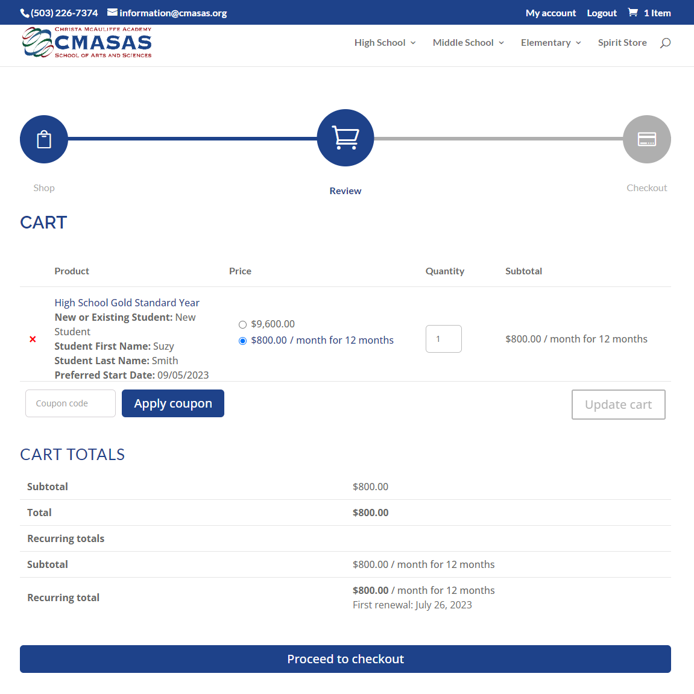

Christa McAuliffe Academy School of Arts and Sciences
Website Redesign
Overview
This was a project that began with redesigning an online school's website to make it more appealing and easy to use. As it was my first professional project in the UX field, it was both exciting and challenging to tackle a project with such scope by myself, and I ended up learning a great deal.
Role
Solo UX designer
Deliverables
Redesigned website, new ecommerce system
Tools Used
Figma, WordPress, WooCommerce
Brief
Christa McAuliffe Academy School of Arts and Sciences (CMASAS) is an online K-12 private school focused on educating children all around the world at their own pace. As an online only school, CMASAS's website is the first place prospective students and their families learn about the program, and serves as an information hub for current students and their families. However, the website was over 5 years old and was in need of a redesign. With the increased interest in at-home education due to the pandemic, our enrollment counselors and customer service representatives reported that they were being overwhelmed with helping answer users' questions and paying their tuition. A project was started to both redesign the website and improve the tuition payment process.
My Role and Responsibilities
My role was the UX Designer and I was responsible for leading the design process for the website redesign, as well as the implementation. I worked alongside the Director of Marketing for much of the User Research and Define portions of the redesign process.
With a redesign project having such a large scope, the Director of Marketing and I wanted to learn as much as possible as to whyour users were finding it difficult to use our website by empathizing with users and learning about our competitors.
Specifically, we wanted to know:
What information prospective students and their families are researching when they are looking into enrolling at an online private school.
Pain points and frustrations that users encounter, especially in regards to the enrollment and tuition purchasing/management process.
Experiences that prospective students and their families find enjoyable when using education-related websites.
Competitor Analysis
Our next step was looking into our competitors to understand the market of online K-12 schooling. We researched both private online schools as well as public ones by exploring their websites, signing up for marketing emails, and calling enrollment counselors to be led through their enrollment processes. We found that in nearly all cases, private schools' websites led the customer journey to end outside of the website by talking to an enrollment counselor on the phone. Takeaways of well-designed school websites were ones that showcased example successful students and how the school is the right fit for them, included an example course and course schedules, and provided a catalog of all classes offered.
Heuristic Evaluation
The Director of Marketing and I then completed a heuristic evaluation of the entire site in order to identify existing pain points and to generate low-effort solutions. We found numerous legibility issues such as low contrast on text that did not meet accessibility standards, and small font sizes that made it difficult to read on mobile devices. We also noted content that we wanted to keep in the redesign as well.
User Interviews
With our interviews, we sought to gain a better understanding of our customers and their thought processes and experiences when researching schools in-person and online. We asked them about their views on public schools versus private schools, experience with online schooling, goals when researching schools, and their frustrations with the school research process.
Developed an interview guide and script to guide participants into sharing insights.
Recruited five participants ages 30-50 who have recently researched schooling for their children.
Conducted interviews using the script as a guide, and using reflective listening techniques to further glean insights.
Research Results
We found that users:
Value support. Schools that provide a lot of student support were highly valued by participants.
Interested in curriculum. Participants talked about wanting to see schools' curriculum such as the classes they offer, curricula used, and example lessons.
Look for personalization. Participants looked for schools that are able to cater to their child's individual education needs.
Want to manage their students' enrollment easily. A common pain point for participants was having to talk to school staff to manage everything related to tuition payments and enrollment.
Like visual content. Parents spoke about their preference for when school websites offered a lot of images of student activities and curricula.
User Insight
Parents with children who have individual needs, need to find an online school that provides quality education in a safe and supportive environment because they want their children to reach their fullest potential.
Define
After performing research and gathering insights from users about the process of finding an online school, the next step was to define some goals for the redesign. First, we wanted to create a persona in order to best represent our users goals, needs, and frustrations. Then we would use the persona to map out our users' current journey to understand the enrollment process. Finally, we wanted to map out our website content and perform a card sorting exercise to better structure the website and make it more intuitive for users to meet their needs.
Questions
We wanted to create a list of "How might we" questions to help further define our goals for the redesign process.
How might we make purchasing and managing tuition easier for our users?
How might we help users choose a tuition plan that best fits their child's needs?
How might we provide users with enough information so they do not feel required to talk to an enrollment counselor before making a decision?
Persona
Using data from our research interviews, we created a persona to represent a typical customer. This persona will be used to keep customers' needs and frustrations into account when redesigning the website, as well as use it to guide our design process through the customer journey. The persona we designed is an accounts manager in her 40s with two high school-aged children looking for an online school that fits their individual needs.
User Journey
I also researched the user journey by going through the entire process of being a customer and recording all the pages interacted with and steps taken. I began by researching tuition plans from the viewpoint of the persona we had created and then interacting with the website in order to select a tuition plan. Once I had completed all the research, I selected a tuition plan, set up a payment plan for it, and then enrolled a student. I also followed the journey of managing a tuition plan. From our user research and competitor analysis, we knew that having a system for users to be able to see what their tuition plan was and make changes to it without having to talk to school staff was important.
Information Architecture
Our research also showed that users often were frustrated when navigating school websites as they found their menus unintuitive and information about the school's tuition, academic support, and extracurricular activities hard to find. Thus, we wanted to design an information architecture for the website redesign that would make it simple and intuitive for users to find the information they need, whether that was curriculum or counseling. We first completed an extensive site map of our website, and then looked at competitors' sites to see how they laid out their websites. Particular attention was paid to how other schools presented their curriculum and application process. Using our own site along with notes gathered from our competitors' sites, we developed a list of common categories online school pages are categorized into.
Card Sorting
In order to better understand how users might intuitively categorize web pages, we performed a card sorting exercise with over 20 participants consisting of school staff, parents, and students. The results were insightful as we found even users who were already familiar with our site preferred several pages organized into different categories than the ones they are currently in.
Site Map
Once we had the results from the card sorting exercise, the Director of Marketing and I put together a sitemap for the redesigned website, using the card sorting data to guide the design for the information architecture.
Design
Ecommerce design
The company wanted to prioritize redesigning their e-commerce system before redesigning the rest of the website. Currently, the company's website only had the ability to take credit card payments - other methods of payment had to be done through contacting our accounts manager via phone or email. Managing tuition after the initial payment also had to be done through the accounts manager as there was no customer dashboard where a customer could view which tuition they were enrolled in and how they were paid for.
The two main requirements for the ecommerce platform were for it to integrate with our existing Customer Management System (CMS) and payment gateway. We researched several e-commerce platforms and tested Shopify for a few weeks before settling on WooCommerce, an e-commerce platform plugin for WordPress. We selected WooCommerce provided us with flexibility to integrate with our payment gateway and accounting platform through various affordable plugins.
Using Elementor, a website builder for WordPress, I developed a store for customers to pay for tuition, purchase individual courses, and buy merchandise. I also incorporated feedback from customers and updated the design to make it easier for users to fill out fields, find required fees, track their progress in the checkout process, and view their tuition plans and upcoming payments.

Prototypes
Since the company was also concurrently developing a class catalog for the website, they wanted to use a theme in order to maintain compatibility. Using a theme that we had selected with the company's approval, I began designing a prototype in order to begin testing the new site's information architecture and the user journey of selecting and then purchasing tuition.
Unfortunately, soon after beginning to design the prototype, the company downsized and I was laid off along with the marketing department, so prototypes of the rest of the website redesign were not completed.
Next steps
Other than completing the prototype and refining it through user testing, I would have wanted to make the school website and store more seamlessly integrated.